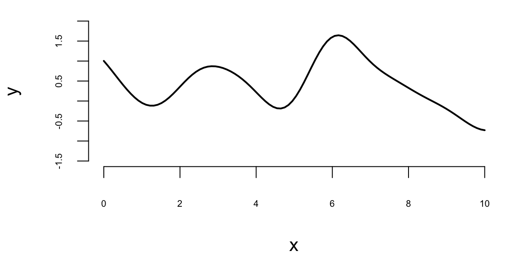
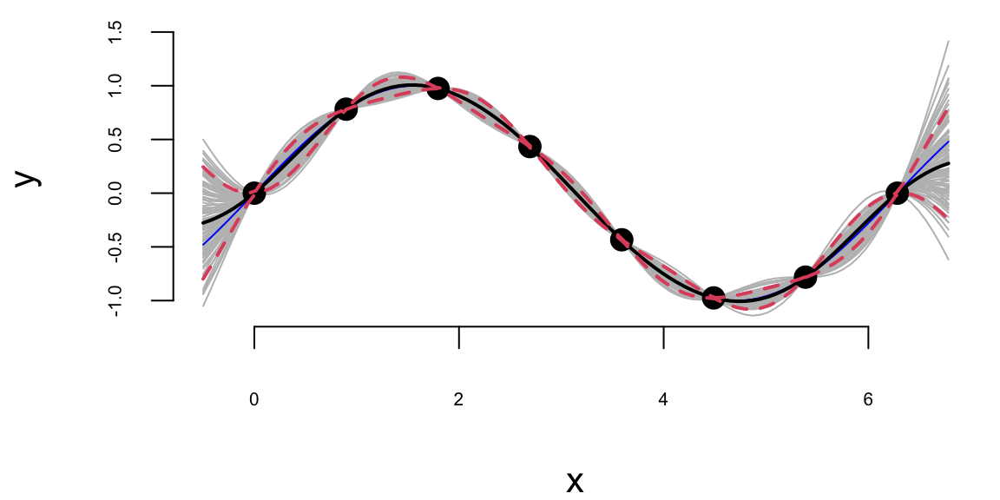
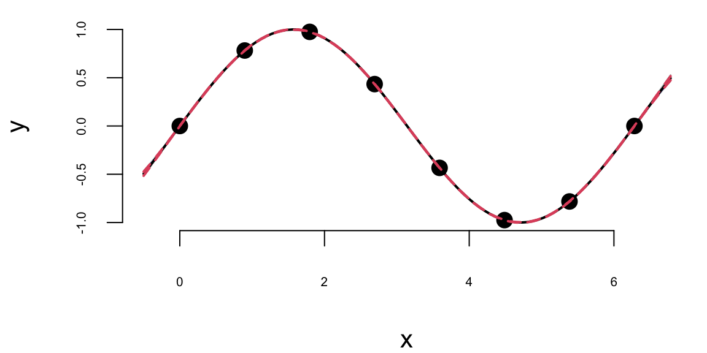

x = seq(0,10, length.out = 100)9 Gaussian Processes
A Gaussian Process (GP) is a collection of random variables, any finite number of which have a joint Gaussian distribution. It’s a powerful tool for modeling and predicting in various fields, particularly useful for regression and classification tasks in machine learning. A finite collection of \(n\) points from Gaussian Process is completely specified by its \(n\)-dimensional mean \(\mu\) and covariance matrix \(\Sigma\). The index of the GP is a real number \(x\) and values are also real numbers. The mean of the process (and a finite collection of points) is defined by function \(m(x)\) and covariance is defined by function \(k(x, x')\), where \(x\) and \(x'\) are points in the index space. The mean function defines the average value of the function at point \(x\), and the covariance function, also known as the kernel, defines the extent to which the values of the function at two points \(x\) and \(x'\) are correlated.
\(k(x, x')\), where \(x\) and \(x'\) are points in the input space. The mean function defines the average value of the function at point \(x\), and the covariance function, also known as the kernel, defines the extent to which the values of the function at two points \(x\) and \(x'\) are correlated. In other words, the kernel function is a measure of similarity between two input points. The covariance between two points is higher if they are similar, and lower if they are dissimilar. Thus Gaussian Process is completely specified by its mean function and covariance function and an instance of a one-dimensional GP is a function \(f(x): \mathbb{R} \rightarrow \mathbb{R}\), a typical notation is \[ f(x) \sim \mathcal{GP}(m(x), k(x, x')). \] The mean function* \(m(x) = \mathbb{E}[f(x)]\) is then represents the expected value of the function at point \(x\), and the covariance function: \(k(x, x') = \mathbb{E}[(f(x) - m(x))(f(x') - m(x'))]\) describes the amount of dependence between the values of the function at two different points in the input space.
Typically the mean function is less important than the covariance function. Most of the time data scientists will use a zero mean function, \(m(x)=0\), and focus on the covariance function. The kernel function is often chosen to be a function of the distance between the two points \(|x-x'|\) or \(\|x-x'\|_2\) in higher dimensions. The most commonly used kernel function is the squared exponential kernel, which is a function of the squared distance between the two points. The squared exponential kernel is given by: \[ k(x, x') = \sigma^2 \exp\left(-\frac{(x - x')^2}{2l^2}\right) \] where \(\sigma^2\) is the variance parameter and \(l\) is the length scale parameter. The variance parameter controls the vertical variation of the function (amplitude), and the length scale parameter controls the horizontal variation (number of “bumps”). The length scale parameter determines how far apart two points must be to be considered dissimilar. The larger the length scale, the smoother the function. The length scale parameter is also called the bandwidth parameter. In this case the covariance decays exponentially with the distance between the points. Observe, that \(k(x,x) = \sigma^2\) and \(k(x,x') \rightarrow 0\) as \(|x-x'| \rightarrow \infty\).
Let’s demonstrate GP using a simulated example. We start by generating a sequence 100 inputs (process indexes)
and then define the mean function and the covariance function
mean = rep(0, length(x))
sqexpcov = function(x, x1, l=1, sigma=1) {
exp(-0.5 * (x - x1)^2 / l^2) * sigma^2
}The covariance function is a function of the distance between the two points and not the actual values of the points. The squared exponential kernel is infinitely differentiable, which means that the GP is a very smooth function. The squared exponential kernel is also called the radial basis function (RBF) kernel. The covariance matrix is then defined as
cov_mat = outer(x, x, sqexpcov)and we can generate a sample from the GP using the mvrnorm function from the MASS package and plot a sample
library(MASS)
set.seed(17)
Y = mvrnorm(1, mean, cov_mat)
plot(x, Y, type="l", xlab="x", ylab="y", ylim=c(-1.5,2), lwd=2)

Figure 9.1 shows a collection of 100 points of function \(f(x)\) sampled from a Gaussian Process with zero mean and squared exponential kernel for the set of 100 indexes \(x =(0,0.1,0.2,\ldots,10)\). By visually inspecting the finite realization in Figure 9.1 of the GP, we can see that the sampled function is smooth, with most of its values between -2 and 2. Notice, that each element of the covariance matrix is less than 1. Thus, by properties of the normal 95% of points of \(Y\) should be within 1.96 of the zero (the mean). We see a few bumps on the plot, because values of \(Y\) with indexes close to each other are highly correlated.
Let’s generate a few more samples from the same GP and plot them together
Ys = mvrnorm(3, mean, cov_mat)
matplot(x, t(Ys), type="l", ylab="Y", lwd=5)
Each random finite collection is different than the next. They all have similar range, about the same number of bumps, and are smooth. That’s what it means to have function realizations under a GP prior: \(Y = f(x) \sim \mathcal{GP}(0, k(x, x'))\)
9.1 Making Predictions with Gaussian Processes
If we think that our observed data with input indexes \(X = (x_1,\ldots,x_n)\) and outputs \(Y = (y_1,\ldots,y_n)\) are a realization of a Gaussian Process, then we can use the GP to make predictions about the output values at new inputs \(x_* \in \mathbb{R}^q\). The joint distribution of the observed data \(Y\) and the new data \(y_*\) is given by \[ \begin{bmatrix} Y \\ y_* \end{bmatrix} \sim \mathcal{N} \left ( \begin{bmatrix} \mu \\ \mu_* \end{bmatrix}, \begin{bmatrix} K & K_* \\ K_*^T & K_{**} \end{bmatrix} \right ) \] where \(K = k(X, X)\in \mathbb{R}^{n\times n}\), \(K_* = k(X, x_*)\in \mathbb{R}^{n\times q}\), \(K_{**} = k(x_*, x_*) \in \mathbb{R}^{q\times q}\), \(\mu = \mathbb{E}[Y]\), and \(\mu_* = \mathbb{E}[y_*]\). The conditional distribution of \(y_*\) given \(y\) is then given by \[ y_* \mid Y \sim \mathcal{N}(\mu_{\mathrm{post}}, \Sigma_{\mathrm{post}}). % y_* \mid Y \sim \mathcal{N}(\mu_* + K_* K^{-1} (y - \mu), K_{**} - K_*^T K^{-1} K_*). \] The mean of the conditional distribution is given by \[ \mu_{\mathrm{post}} = \mu_* + K_*^TK^{-1} (Y - \mu) \tag{9.1}\] and the covariance is given by \[ \Sigma_{\mathrm{post}} = K_{**} - K_*^T K^{-1} K_*. \tag{9.2}\]
Equation 9.1 and Equation 9.2 are convenient properties of a multivariate normal distribution.
Example 9.1 (Gaussian Process for \(\sin\) function) Let’s use the GP to make predictions about the output values at new inputs \(x_*\). We use \(x\) in the [0,\(2\pi\)] range and \(y\) to be the \(y = \sin(x)\). We start by simulating the “observed” \(x\)-\(y\) pairs.
n = 8; eps=1e-6
X = matrix(seq(0, 2*pi, length=n), ncol=1)
Y = sin(X)
K = outer(X[,1],X[,1], sqexpcov) + diag(eps, n)The additive term diag(eps, n) \(=\epsilon I\) adds a diagonal matrix with the small \(\epsilon\) on the diagonal. This term shifts the spectrum of the resulting covariance matrix \(K\) by \(\epsilon\) to the right. This is done to add numerical stability in case one of the eigenvalues is close to zero. It simply gives us a guarantee that solving linear system (inverting) with matrix \(K\) will be a numerically stable operation. In machine learning they call this term the jitter. Now we implement a function that calculates the mean and covariance of the posterior distribution of \(y_*\) given \(Y\).
Now we generate a new set of inputs \(x_*\) and calculate the covariance matrices \(K_*\) and \(K_{**}\).
q = 100
XX = matrix(seq(-0.5, 2*pi + 0.5, length=q), ncol=1)
KX = outer(X[,1], XX[,1],sqexpcov)
KXX = outer(XX[,1],XX[,1], sqexpcov) + diag(eps, q)Notice, we did not add \(\epsilon I\) to \(K_*\) = KX matrix, but to add it to \(K_{**}\) = KXX to guarantee that the resulting posterior covariance matrix is non-singular (invert able). Now we can calculate the mean and covariance of the posterior distribution of \(y_*\) given \(Y\).
Si = solve(K)
mup = t(KX) %*% Si %*% Y # we assume mu is 0
Sigmap = KXX - t(KX) %*% Si %*% KXNow, we can generate a sample from the posterior distribution over \(y_*\), given \(Y\)
YY = mvrnorm(100, mup, Sigmap)Using our convenience function plot_gp we can plot the posterior distribution over \(y_*\), given \(Y\).
plot_gp = function(mup, Sigmap, X, Y, XX, YY){
q1 = mup + qnorm(0.05, 0, sqrt(diag(Sigmap)))
q2 = mup + qnorm(0.95, 0, sqrt(diag(Sigmap)))
matplot(XX, t(YY), type="l", col="gray", lty=1, xlab="x", ylab="y")
points(X, Y, pch=20, cex=2)
lines(XX, sin(XX), col="blue")
lines(XX, mup, lwd=2)
lines(XX, q1, lwd=2, lty=2, col=2)
lines(XX, q2, lwd=2, lty=2, col=2)
}plot_gp(mup, Sigmap, X, Y, XX, YY)

Example 9.2 (Gaussian Process for Simulated Data using MLE) In previous example we assumed that the \(x\)-\(y\) relations are modeled by a GP with \(\sigma^2 = 1\) and \(2l^2 = 1\). However, we can use the observed data to estimate those to parameters. In the context of GP models, they are call hyper-parameters. We will use Maximum Likelihood Estimation (MLE) procedure to estimate those hype-parameters. The likelihood of a data that follows multivariate normal distribution is given by \[ p(Y \mid X, \sigma, l) = \frac{1}{(2\pi)^{n/2} |K|^{1/2}} \exp \left ( -\frac{1}{2} Y^T K^{-1} Y \right ) \] where \(K = K(X,X)\) is the covariance matrix. We assume mean is zero, to simplify the formulas. The log-likelihood is given by \[ \log p(Y \mid X, \sigma, l) = -\frac{1}{2} \log |K| - \frac{1}{2} Y^T K^{-1} Y - \frac{n}{2} \log 2\pi. \]
Let’s implement a function that calculates the log-likelihood of the data given the hyper-parameters \(\sigma\) and \(l\) and use optim function to find the maximum of the log-likelihood function.
loglik = function(par, X, Y) {
sigma = par[1]
l = par[2]
K = outer(X[,1],X[,1], sqexpcov,l,sigma) + diag(eps, n)
Si = solve(K)
return(-(-0.5 * log(det(K)) - 0.5 * t(Y) %*% Si %*% Y - (n/2)* log(2*pi)))
}
par = optim(c(1,1), loglik, X=X, Y=Y)$par
print(par) 1.5 2.4The optim function returns the hyper-parameters that maximize the log-likelihood function. We can now use those hyper-parameters to make predictions about the output values at new inputs \(x_*\).
l = par[2]; sigma = par[1]
predplot = function(X, Y, XX, YY, l, sigma) {
K = outer(X[,1],X[,1], sqexpcov,l,sigma) + diag(eps, n)
KX = outer(X[,1], XX[,1],sqexpcov,l,sigma)
KXX = outer(XX[,1],XX[,1], sqexpcov,l,sigma) + diag(eps, q)
Si = solve(K)
mup = t(KX) %*% Si %*% Y # we assume mu is 0
Sigmap = KXX - t(KX) %*% Si %*% KX
YY = mvrnorm(100, mup, Sigmap)
plot_gp(mup, Sigmap, X, Y, XX, YY)
}
predplot(X, Y, XX, YY, l, sigma)
We can see that our uncertainty is much “tighter”, the posterior distribution is much narrower. This is because we used the observed data to estimate the hyper-parameters. We can also see that the posterior mean is closer to the true function \(y = \sin(x)\). Although our initial guess of \(\sigma^2 = 1\) and \(2l^2 = 1\) was not too far off, the model fits the data much better when we use the estimated hyper-parameters.
The function optim we used above uses a derivative-based optimization algorithm and when derivative is not provided by the user, it uses a numerical approximation. Although we can use numerical methods to calculate the derivative of the log-likelihood function, it is faster and more accurate to use analytical derivatives, when possible. In the case of the GP’s log-likelihood, the derivative can be analytically calculated. To do it, we need a couple of facts from matrix calculus. If elements of matrix \(K\) are functions of some parameter \(\theta\), then \[
\frac{\partial Y^T K^{-1} Y}{\partial \theta} = Y^T \frac{\partial K^{-1}}{\partial \theta} Y.
\] The derivative of the inverse matrix \[
\frac{\partial K^{-1}}{\partial \theta} = -K^{-1} \frac{\partial K}{\partial \theta} K^{-1}.
\] and the log of the determinant of a matrix \[
\frac{\partial \log |K|}{\partial \theta} = \mathrm{tr} \left ( K^{-1} \frac{\partial K}{\partial \theta} \right ),
\] we can calculate the derivative of the log-likelihood function with respect to \(\theta\) \[
\frac{\partial \log p(Y \mid X,\theta)}{\partial \theta} = -\frac{1}{2}\frac{\partial \log |K|}{\partial \theta} + \frac{1}{2} Y^T \frac{\partial K^{-1}}{\partial \theta} Y.
\] Putting it all together, we get \[
\frac{\partial \log p(Y \mid X,\theta)}{\partial \theta} = -\frac{1}{2} \mathrm{tr} \left ( K^{-1} \frac{\partial K}{\partial \theta} \right ) + \frac{1}{2} Y^T K^{-1} \frac{\partial K}{\partial \theta} K^{-1} Y.
\] In the case of squared exponential kernel, the elements of the covariance matrix \(K\) are given by \[
K_{ij} = k(x_i, x_j) = \sigma^2 \exp \left ( -\frac{1}{2} \frac{(x_i - x_j)^2}{l^2} \right ).
\] The derivative of the covariance matrix with respect to \(\sigma\) is given by \[
\frac{\partial K_{ij}}{\partial \sigma} = 2\sigma \exp \left ( -\frac{1}{2} \frac{(x_i - x_j)^2}{l^2} \right );~\frac{\partial K}{\partial \sigma} = \dfrac{2}{\sigma}K.
\] The derivative of the covariance matrix with respect to \(l\) is given by \[
\frac{\partial K_{ij}}{\partial l} = \sigma^2 \exp \left ( -\frac{1}{2} \frac{(x_i - x_j)^2}{l^2} \right ) \frac{(x_i - x_j)^2}{l^3};~ \frac{\partial K}{\partial l} = \frac{(x_i - x_j)^2}{l^3} K.
\] Now we can implement a function that calculates the derivative of the log-likelihood function with respect to \(\sigma\) and \(l\).
# Derivative of the log-likelihood function with respect to sigma
dloglik_sigma = function(par, X, Y) {
sigma = par[1]; l = par[2]
K = outer(X[,1],X[,1], sqexpcov,l,sigma) + diag(eps, n)
Si = solve(K)
dK = 2*K/sigma
tr = sum(diag(Si %*% dK))
return(-(-0.5 * tr + 0.5 * t(Y) %*% Si %*% dK %*% Si %*% Y))
}
# Derivative of the log-likelihood function with respect to l
dloglik_l = function(par, X, Y) {
sigma = par[1]; l = par[2]
K = outer(X[,1],X[,1], sqexpcov ,l,sigma) + diag(eps, n)
Si = solve(K)
dK = outer(X[,1],X[,1], function(x, x1) (x - x1)^2)/l^3 * K
tr = sum(diag(Si %*% dK))
return(-(-0.5 * tr + 0.5 * t(Y) %*% Si %*% dK %*% Si %*% Y))
}
# Gradient function that returns a vector of derivatives
gnlg = function(par,X,Y) {
return(c(dloglik_sigma(par, X, Y), dloglik_l(par, X, Y)))
}Now we can use the optim function to find the maximum of the log-likelihood function and provide the derivative function we just implemented.
par1 = optim(c(1,1), fn=loglik, gr=gnlg ,X=X, Y=Y,method="BFGS")$par
l = par1[2]; sigma = par1[1]
print(par1) 1.5 2.4The result is the same compared to when we called optim without the derivative function. Even execution time is the same for our small problem. However, at larger scale, the derivative-based optimization algorithm will be much faster.
Furthermore, incited of coding our own derivative functions, we can use an existing package, such as the laGP package, developed by Bobby Gramacy to estimate the hyper-parameters. The laGP package uses the same optimization algorithm as we used above, but it also provides better selection of the covariance functions and implements approximate GP inference algorithms for large scale problems, when \(n\) becomes large and inversion of the covariance matrix \(K\) is prohibitively expensive.
library(laGP)
gp = newGP(X, Y, 1, 0, dK = TRUE)
res = mleGP(gp, tmax=20)
l.laGP = sqrt(res$d/2)
print(l.laGP) 2.4In the newGP function defines a Gaussian process with square exponential covariance function and assumes \(\sigma^2 = 1\), then mleGP function uses optimization algorithm to maximize the log-likelihood and returns the estimated hyper-parameters d = \(2l^2\), we can see that the length scale is close to the one we estimated above. We will use the predplot convenience function to calculate the predictions and plot the data vs fit.
predplot(X, Y, XX, YY, l, sigma)
predplot(X, Y, XX, YY, l.laGP, 1)

We can see that there is visually no difference between the two fits. Thus, it seem irrelevant weather we keep sigma fixed \(\sigma=1\) or estimate it using MLE. However, is other applications when uncertainty is larger, the choice of \(\sigma\) is important when we use GP for regression and classification tasks. Even for our example, if we ask our model to extrapolate
XX1 = matrix(seq(-4*pi, 6*pi + 0.5, length=q), ncol=1)
predplot(X, Y, XX1, YY, l, sigma)
predplot(X, Y, XX1, YY, l.laGP, 1)
Extrapolation: Posterior distribution over \(y_*\), given \(Y\)
We can see that outside of the range of the observed data, the model with \(\sigma=1\) is more “confident” in its predictions.
Now, instead of using GP to fit a known function (\(\sin\)), we will apply it to a real-world data set. We will use the motorcycle accident data set from the MASS package. The data set contains accelerator readings taken through time in a simulated experiment on the efficacy of crash helmets.
Example 9.3 (Gaussian Process for Motorcycle Accident Data) We first estimate the length scale parameter \(l\) using the laGP package.
library(MASS)
X = mcycle$times
Y = mcycle$accel
gp = newGP(matrix(X), Y, 2, 1e-6, dK = TRUE);
mleGP(gp, tmax=10);Now we plot the data and the fit using the estimated length scale parameter \(l\).
XX = matrix(seq(2.4, 55, length = 499), ncol=1)
p = predGP(gp, XX)
N = 499
q1 = qnorm(0.05, mean = p$mean, sd = sqrt(diag(p$Sigma)))
q2 = qnorm(0.95, mean = p$mean, sd = sqrt(diag(p$Sigma)))
q3 = qnorm(0.5, mean = p$mean, sd = sqrt(diag(p$Sigma)))
ggplot() + geom_point(aes(x=X,y=Y)) + geom_line(aes(x=XX,y=q3)) + geom_ribbon(aes(x=XX,ymin=q1, ymax=q2), alpha=0.2)
We can see that our model is more confident for time values between 10 and 30. The confidence interval is wider for time values between 0 and 10 and between 30 and less confident at the end close to the 60 mark. For some reason the acceleration values were not measure evenly, if we look at the histogram of time values, we can see that there are more data points in the middle of the time range.
hist(X)
The \(\sqrt{n}\) decay in variance of the posterior distribution is a property of the squared exponential kernel.
In summary, Gaussian Processes provide a robust and flexible framework for modeling and predicting in situations where uncertainty and correlation among data points play a critical role. Their versatility and powerful predictive capabilities make them a popular choice in various scientific and engineering disciplines. GPs are considered non-parametric, which means they can model functions of arbitrary complexity. Through the choice of the kernel function, GPs can model a wide range of correlations between the data points. The mean and covariance functions can incorporate prior knowledge about the behavior of the function being modeled. There are many areas of applications for GP. The two main applications are: (i) predictive modeling, (ii) optimization, (iii) uncertainty quantification. We will focus on the first two applications in the later sections. In predictive modeling we can use GPs to predict the value of a function at new points, taking into account the uncertainty of the prediction. GPs are particular useful in spatial data analysis, where the correlation between data points is often related to their physical distance. Thus, GPs are quite often used for environmental modeling to analyze temperature or pollution levels, over geographical areas.